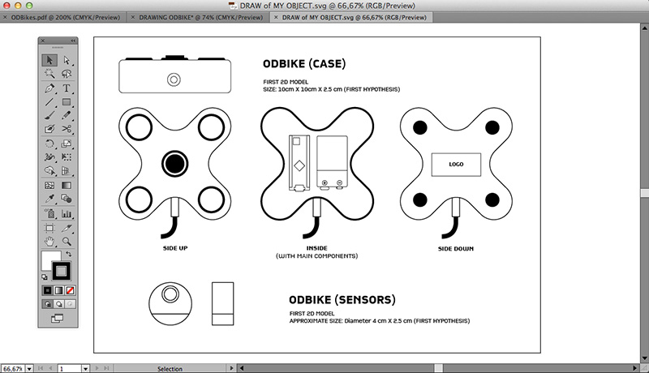
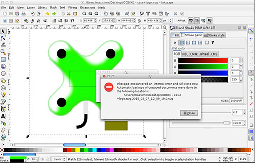
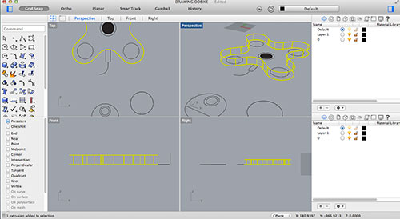
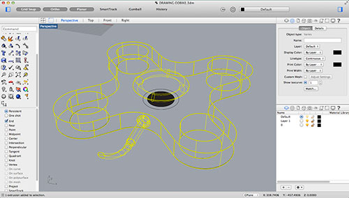
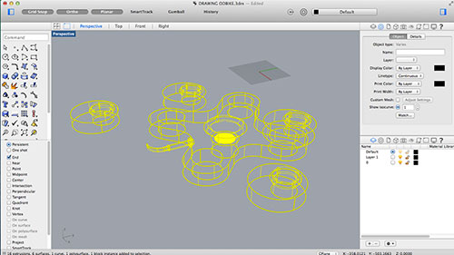
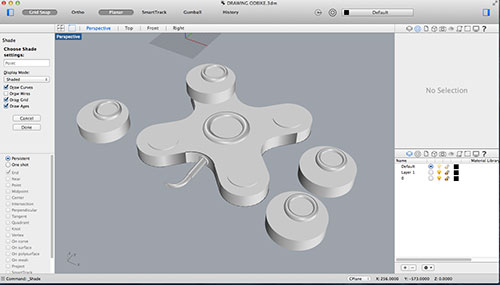
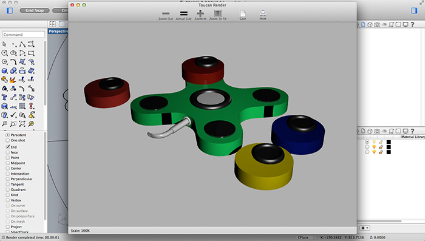

Model (Draw, Render, Animate, Simulate,…) a possible final project, and post it on your class page.
15 years ago was the last time I used a 3D modeling software (Alias Wavefront). So I am re-starting to acquire technical knowledge dividing my assignment into two tasks:
To have an idea about the final dimensions of my project, I started to research on the web the right size ot its two biggest components: the microcontroller and the battery. I created a first technical draw and a 2D model using Illustrator. I saved an SVG file and opening it in Inkscape. I tried to play with this software. Firstly, I explored the main functions comparing Inkscape options with the Illustrators ones. The shift is not so traumatic and there are interesting functionalities about the use of patterns and materials. Playing with the materials tools and adding a shadows Inkscape continuously crashes but automatic and easily recovered my work
 I started to use Rhino (for the first time in my life). First of all, I exported an SVG file from illustrator with the tecnical drawing of my object. Then I started to take confidence with 3D modeling in Rhino extruding the basic surfaces. Step by Step I learned to use other basic commands (scale, rotate, copy, move, etc.). Then, I tried to use more sophisticated functions to better define my object (as the fillets) but without success. I have to spend much more time to learn commands in a professional way. After modeling the micro-controller case I started to 3D model the micro-sensors case. Then, I tried to apply some basic materials in order to create a basic rendering (I discovered Rhino is not so good for rendering). Finally, I created a .STL file to import my 3D model in Blender then simplify it in order to create a lighter file to publish on my website.
    This is the 3D model of my object.
Download 2D drawing (first version)
Download 3D model (first version)
Rhino is very limited in rendering but is very easy to use as a beginner. Probably, I will combine Rhino and Blender to develop my project. I also tried FreeCad but it seems to me very 'obscure' and sometimes it unexpectedly crashes.
I need to make a lot practice with 3D modeling softwares in order to better develop my project. It is very important learn to use in proficient way a couple of softwares - probably Rhino and Blender. At the same time it is also important to understand the basic functions (and the logics) of other 3D modeling softwares in order to rapidly change and convert formats and bridging from closed to open softwares.
{kind=link}